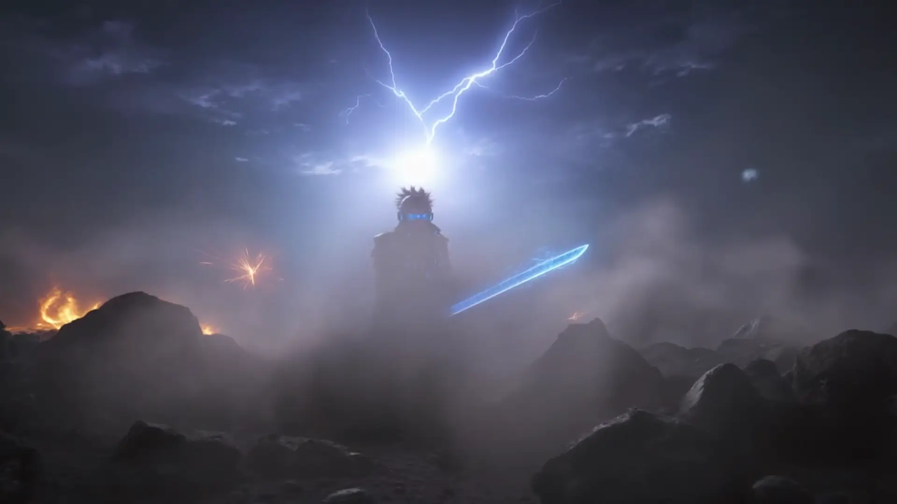
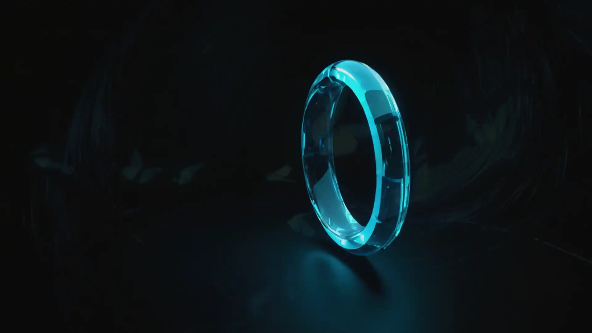
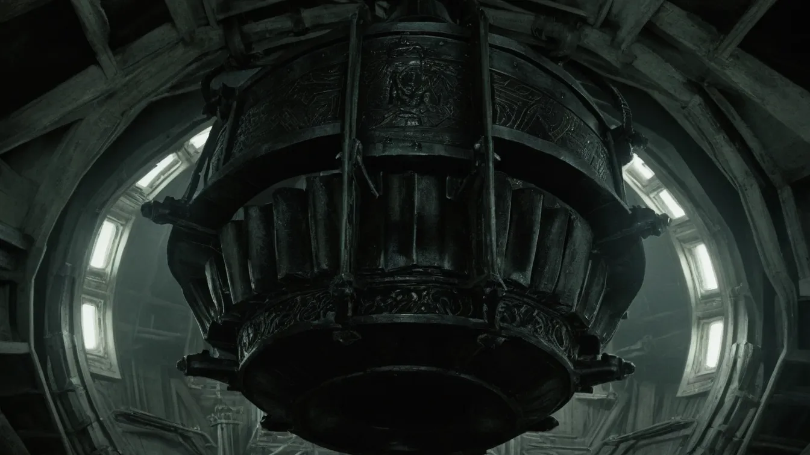

PÔLE 01 // CORE
Ingénierie Web & Métier
Applications sur mesure, architectures modulaires, refontes d'API sous contrôle strict.

Vos outils. Chez vous. À vous.
Développement web et IA locale pour PME.
« On n'écrit rien qu'on n'ait mesuré, et on ne construit rien qui sorte de chez vous. »
Premier échange gratuit — 30 min →
Faites défiler vers le bas — ou, au clavier, appuyez sur la touche « Page suivante » — pour parcourir les huit actes de la présentation, de l'ouverture au navire.
Ce qui arrive : fichiers, voix, images. Les flux sensibles sont conçus pour être traités localement ou dans des environnements explicitement validés avec vous. Aucun transfert vers un service tiers n'est activé sans information préalable.
Développement Symfony / Vue.js · Audit web · Automatisation IA locale · Mémoire documentaire · Site web · Application métier · Maintenance — sur devis.
Rien ne sort sans validation humaine.
Une machine, un poste, des agents qui travaillent pour vous — et un humain qui valide chaque étape.
Au centre du navire bat ORACLE. Un oracle ne décide pas du destin : il le lit.
Core · Data · AI · OS · Shield · Network (plus tard)
Les papillons — le motif qui traverse la séquence d'ouverture, de bout en bout.

Refaites-les : ces mesures ne viennent pas de chez moi, elles viennent d'un navigateur. Un audit public, une console ouverte, et vous obtenez les mêmes.
Un galion de métal dans le vide et l'obscurité ; sa seule lumière est la sienne.

ORACLE La salle du réacteur, vue d'en dessous : la seule lumière du navire est la sienne.Applications sur mesure, architectures modulaires, refontes d'API sous contrôle strict.
Modèles exécutés sur le poste du client ou sur un serveur dédié — aucune donnée ne sort.
Indexation de documents (PDF, mails, code) avec sourçage exact et suppression à la demande.
Conformité RGAA, durcissement, chiffrement des disques, validation humaine continue.
Studio à Harponville (Somme, Hauts-de-France). Échange initial sans engagement.
CANAL VIDÉO : voir le bloc « Vidéos » ci-dessous.
CAPACITÉ : deux nouveaux projets par mois.
DONNÉES : traitées sur la machine du studio ou chez le client. Aucun traceur.
Écrire au studio — ou écrivez à gtn.langlet+lab@gmail.com, si aucun logiciel de messagerie n'est configuré sur votre poste.
Architectures robustes et durables, axées sur la maintenabilité et la sécurité.
Pipelines de modèles locaux, mémoire documentaire et connecteurs MCP locaux — rien ne sort sans validation.
Scrollytelling haute performance, interfaces WebGL et pipelines d'actifs temps réel.
Industrialisation des flux, sécurisation des données et surveillance automatisée.